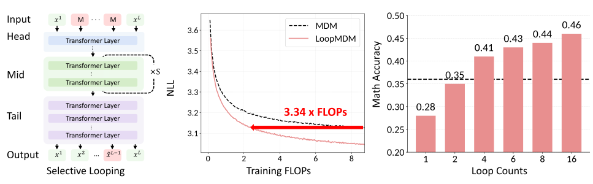
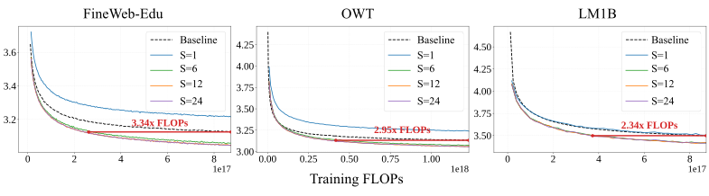
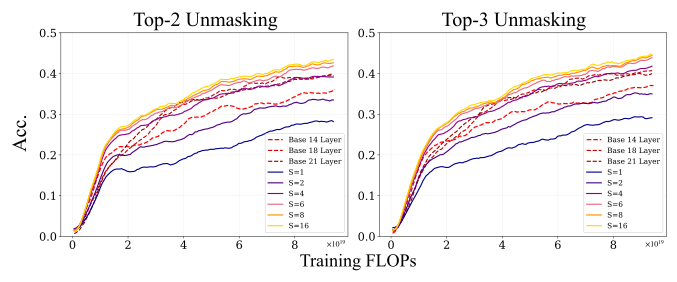
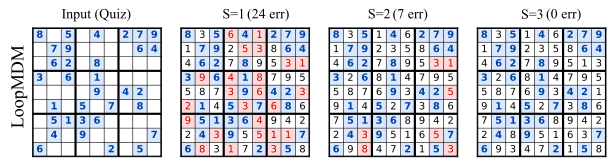
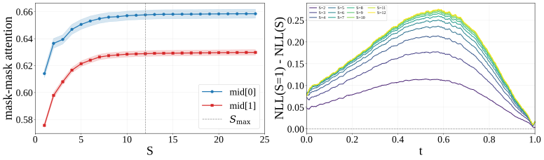
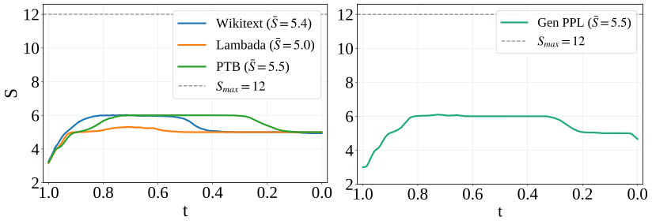
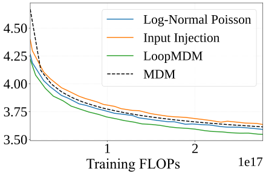

循环扩散语言模型：在掩码扩散模型里只循环中间靠前的几层
Looped Diffusion Language Models（LoopMDM）
阅读状态、进度与收藏只保存在你的浏览器里。
逐节精读
这部分按论文的章节顺序，用本站自己的话把整篇论文从头讲一遍，附录里对理解正文有用的内容（k-Clique 例子的证明、实验细节、自适应圈数的阈值扫描、别的循环技巧的对照、逐 token 的例子）放进了对应的章节。读懂某个概念需要的背景知识，会在第一次用到它之前单独讲清楚（青色框）。每个结论都尽量说出“因为什么、所以什么”。论文以 CC BY 4.0 发布，原图放在讲到它的地方，并说明这张图怎么看；原图没画到的概念，用本站的示意图补上。标“推算”的数字是本站根据论文数据算出来的，标“目测”的数字是从原文图上读出来的近似值，都不是论文原话。每节末尾有英文原文的链接。
0 导读：这篇论文解决什么问题
掩码扩散语言模型（masked diffusion model，下文简称 MDM）生成文字的方式和 GPT 这类自回归模型不一样。它先把要写的整段位置都填成一个特殊的“掩码”符号，然后分很多步：每一步让一个双向的 Transformer 同时猜所有还被遮住的位置，把其中一部分猜测定下来，下一步再接着猜剩下的，直到全部填满。近两年 LLaDA、Dream 等模型把这条路线做到了几十亿参数，但它们的网络结构基本照搬自回归模型的 Transformer。“专门给扩散模型用的网络应该长什么样”，研究得还很少。
这篇论文从另一条研究线借来了一个工具：循环 Transformer。循环的意思是让同一组层被反复使用好几遍，于是网络在参数量不变的情况下变“深”了，代价是每次前向要多算几遍。作者发现，在 MDM 里不必把整个网络都循环：12 层的网络里，只把靠前的两层（从 0 开始数是第 1、2 层）反复过 \(S\) 遍就够了。他们把这个设计叫 LoopMDM（Looped Masked Diffusion Model）。训练时每一步随机抽一个 1 到 12 之间的圈数，推理时圈数可以自由选，甚至可以超过 12。
论文报告的主要结果有四条。第一，在 1.7 亿参数、总训练算力与不循环的同尺寸 MDM 相同的条件下，LoopMDM 在三个预训练语料上达到基线最终测试 NLL 所需的训练 FLOPs 少 2.34–3.34 倍，零样本困惑度、生成困惑度和下游任务也都更好。第二，在用 TinyGSM 训练的 1.25 亿参数数学模型上，GSM8K 准确率最多高 8.5 个点，并且超过了“每步训练算力相同、但多叠了 7 层”的 21 层基线。第三，作者提出“掩码位置是一块草稿纸”的解释：在一个强制从左到右填写的数独实验里，多转几圈能把整盘的错误改掉；在语言模型里，圈数越多，掩码位置之间互相关注得越多。第四，用“隐藏状态不再明显变化就停”的规则自适应决定圈数，平均约 5 圈就保住了 12 圈的大部分收益。
读这篇论文时要一直记着一笔账：LoopMDM 的比较对齐的是参数量和总训练 FLOPs，不对齐推理计算。转 12 圈时，每个去噪步要过 34 层次的 Transformer，约是基线的 2.8 倍（本站推算），而扩散模型生成一段文字本来就要走几百上千个去噪步。本站用论文表 1 的数字按推理计算重新对齐后发现：同样多的推理计算，拿去让不循环的 MDM 多走几步去噪，生成困惑度通常比拿去多转圈更低（第 4.3 节）。此外，所有实验都在 1.7 亿参数以下，论文没有和自回归模型比，官方代码和权重截至 2026-10-20 尚未公开。
读完这部分，你应该能回答这几个问题：
- “循环”在扩散语言模型里有两种完全不同的意思，LoopMDM 是哪一种？
- LoopMDM 的网络长什么样？为什么只循环中间靠前的两层？训练时圈数怎么抽，为什么要随机抽？
- “少用 3.3 倍训练 FLOPs”是怎么量出来的？对齐了什么，没有对齐什么？
- 在 GSM8K 上和 21 层基线比，比的是哪一种算力？如果按推理算力对齐，结论还剩多少？
- “掩码位置是草稿纸”这个解释有哪几条证据，每条证据有多强？
- 自适应圈数省下的到底是什么？它比“直接少转几圈”好在哪里？
1 引言：扩散模型已经在反复计算，为什么还要循环
普通的 Transformer 由 \(N\) 个不同的层堆成，每层有自己的参数。循环 Transformer 把其中一段连续的层当作一个“块”，让隐藏状态在这个块里反复走好几遍，每一遍用的都是同一组参数。可以想成一本只有两页的练习册：不是给学生 \(2S\) 页不同的题，而是让他把这两页反复做 \(S\) 遍，每做一遍，手上的草稿都在上一遍的基础上改进一点。
这样做的好处是参数量不变，网络却变深了：块里有 2 层、走 \(S\) 遍，效果上相当于一个 \(2S\) 层、但只有 2 层不同参数的网络。代价是计算量：参数没变，每次前向要算的层数却成倍增加。所以，“同参数”比较和“同算力”比较会得出很不一样的结论。本站的循环 Transformer 系列精读专门讨论过这一点：Universal Transformers 是跨深度共享参数的起点；Huginn 和 Ouro 把循环模型做到几十亿参数；Parcae 解决循环训练的稳定性；Iso-Depth 在自回归模型上测得，训练算力相同时，多转一圈只值约 0.46 个独立的层。
作者先指出两点空白。第一，循环在自回归模型里已经被当作“推理时多花算力”的办法研究过，但按论文的说法，还没有人在 MDM 里研究过它；而且 MDM 本身就在去噪步之间反复计算，所以并不显然层内再循环还能有用。第二，以前的循环研究要么看参数效率（例如 Saunshi 等人证明循环模型用很少的参数就能做多步推理），要么看推理时的迭代精炼；而在训练 FLOPs 相同的前提下要比不循环的模型更好，并不容易，论文在这里引用的正是上面提到的 Iso-Depth。
所以作者给自己定的问题是：在训练算力对齐的条件下，怎样把循环放进 MDM 才划算？他们系统地扫了“循环哪几层”和“转几圈”，结论是只循环少数几个中间靠前的层，就能拿到循环的全部好处，而训练成本比把整个网络都循环低得多。论文称这是循环 Transformer 第一次被用到掩码扩散语言模型上；需要补充的是，同一时期还有两篇独立的工作也在做类似的事（Fixed-Point Masked Generative Modeling 和本站另有精读的 R-MDM，后者晚一个月发布，把 LoopMDM 列为同期工作）。
1.1 先分清两种“循环”
在扩散语言模型的语境里，“循环”可能指两件完全不同的事，本站这一组五篇精读正好两种都有，读之前先把它们分开：
- 深度方向的循环：在同一个去噪步里，把网络的某些层反复过好几遍，然后才输出这一步的预测。去噪步与步之间，只有离散的 token 画布被传下去，上一步的隐藏状态全部丢掉。LoopMDM 属于这一种。
- 跨步的循环：每一步网络只过一遍，但把上一步算出来的连续信息（隐藏状态或预测分布）直接交给下一步，让它不必从被采样“压扁”的离散 token 重新开始。Loopholing 属于这一种，它的训练借用了更早的自条件化（self-conditioning）的做法。
这两种循环的成本结构完全不同。深度方向的循环让每一步都变贵：转 \(S\) 圈时，每个去噪步多算 \(2(S-1)\) 层；生成要走多少步，这笔额外开销就乘多少次。跨步的循环几乎不增加每步的计算，它改的是“步与步之间传什么”。所以读后面的实验时，LoopMDM 的每一个“更好”，都要问一句：推理时每一步多花了几倍？
这一组的另外几篇也可以按这个分法归类：R-MDM 把整个去噪网络在一步内循环 \(L\) 遍，并加了“第几圈”的嵌入；ALoDLM 也是一步内循环，但允许每个 token 自己决定何时退出；Loop-Distill 只在训练时循环浅层、把效果蒸馏回去，部署时网络只过一遍；Loopholing 则是跨步传递。
1.2 三条主要发现

引言里的三条发现，后面各有一节展开：
- 训练算力效率（第 4 节）：在 FineWeb-Edu、OpenWebText、LM1B 三个语料上，LoopMDM 达到同尺寸 MDM 最终测试 NLL 所需的训练 FLOPs 最多少 3.3 倍；训练 FLOPs 相同时，零样本困惑度、生成困惑度和下游任务都更好。收益很依赖循环放在哪里、循环几层。
- 不只是“变深了”（第 5 节）：在 GSM8K 上比同尺寸基线高 8.5 个点，并且超过每步训练 FLOPs 相同的更深的 MDM，作者据此认为收益来自“同一组计算被反复使用”，而不只是层数多了。
- 机制与自适应推理（第 6、7 节）：数独实验、掩码之间的注意力和按噪声水平拆开的 NLL 收益，指向“循环让掩码位置互相交流”；据此设计的自适应停圈规则，用一半左右的圈数保住了大部分收益。
2 背景：掩码扩散语言模型怎样训练和生成
自回归模型从左到右一个一个地写：每一步只看前面已经写好的内容，预测下一个 token。它的网络是“因果”的，每个位置只能看见自己左边。
掩码扩散模型换了一种写法。它从一整段全是掩码的画布开始，每一步让网络看着整张画布（已经填好的和还空着的位置都能看见，所以网络是“双向”的），同时给每个空位猜一个 token 的分布，然后挑一部分空位把猜测定下来。一旦某个位置被填上，后面就不再改。走完 \(T\) 步，画布填满，生成结束。因为每一步可以同时填好几个位置，它有希望比一个一个写的自回归模型更快；代价是同一步里同时填的几个位置是各自独立地猜的，彼此之间没有商量。本站的 MDLM 和 LLaDA 精读有更完整的推导。
记号。论文用 \(L\) 表示序列长度（注意：不是循环次数），一段序列 \(x=(x^1,\dots,x^L)\) 的每个 token 取自词表 \(\mathcal{V}\)，再加上掩码符号 \(\mathrm{m}\)。圈数在论文里用 \(S\) 表示。
加噪过程。取一个随时间单调下降的函数 \(\alpha_t\)，\(\alpha_0\approx 1\)、\(\alpha_1\approx 0\)。在时刻 \(t\)，每个 token 独立地以概率 \(\alpha_t\) 保持原样，以概率 \(1-\alpha_t\) 被换成掩码：
这里 \(\delta_a(b)\) 是“\(b\) 等于 \(a\) 时为 1、否则为 0”的点质量。用得最多的是线性的 \(\alpha_t=1-t\)，这时 \(t\) 就是被遮住的比例：\(t=0.5\) 时大约一半位置是掩码。后面第 6 节分析“哪个时刻循环最有用”时，横轴就是这个 \(t\)。
去噪过程。生成从全掩码的 \(x_1\) 出发。去噪网络 \(p_{\theta}(x_0^i\mid x_t)\) 看着当前画布，给每个被遮住的位置一个“原来是哪个 token”的分布。从时刻 \(t\) 走到更早的时刻 \(s\) 时，已经填好的位置原样保留；每个还是掩码的位置，以概率 \(\alpha_{s|t}=(1-\alpha_s)/(1-\alpha_t)\) 继续保持掩码，否则从网络给的分布里抽一个 token 填上：
公式里的“各个位置独立地抽”就是上面说的“同一步里同时填的几个位置彼此没有商量”。实际系统常把“随机挑哪些位置填”换成“挑网络最有把握的几个位置填”，第 5 节的 Top-2、Top-3 解码就是这种做法。
自回归模型可以精确算出一段文字的概率，取负对数再按 token 平均，就是 NLL；它的指数就是困惑度（perplexity），可以理解为“模型平均在几个候选里犹豫”。扩散模型算不出精确概率，只能算一个下界，叫证据下界（ELBO）；把它取负，就得到 NLL 的一个上界（NELBO）。所以扩散模型报告的“测试 NLL”和“零样本困惑度”都是上界：真实值只会更好，但两个扩散模型之间比上界，和两个自回归模型之间比精确值，含义不完全一样。
训练目标。MDM 的训练就是最小化 NELBO：随机抽一个时刻 \(t\)，按上面的加噪过程遮住一部分 token，让网络在被遮住的位置预测原 token，交叉熵按 \(-\alpha'_t/(1-\alpha_t)\) 加权（线性调度时这个权重是 \(1/t\)）：
\(\mathbb{I}[\cdot]\) 是指示函数，只在被遮住的位置算损失；\(\langle p,x_0^i\rangle\) 是网络给正确 token 的概率。因为 \(\alpha'_t<0\)，整个式子是正的。这就是 MDLM 推导出的那个“加权的掩码语言模型损失”，后面所有“测试 NLL”都是它在验证集上的值。
3 LoopMDM：只循环中间靠前的两层
作者给设计定了两条原则：第一，只在“每多花一单位训练 FLOPs、收益最大”的那几层上循环，而不是整个网络一起循环；第二，推理时圈数加大，质量应该单调变好，这样推理时才能放心地“多花算力换质量”。
3.1 结构：头、中间块、尾
把去噪 Transformer 从下到上分成三段：\(n_h\) 层的头、\(n_m\) 层的中间块、\(n_o\) 层的尾（尾包括把隐藏状态映射成每个位置的词表分布的输出层）。头和尾每次前向只算一次；中间块的参数是共享的，连续用 \(S\) 次。头和尾不共享，是为了让它们分别专门负责“把 token 变成表示”和“把表示变回预测”。写成公式：
\(H_t^{(k)}\in\mathbb{R}^{L\times d}\) 是第 \(k\) 圈之后所有位置的隐藏状态。展开来看，一次前向相当于过了 \(n_h+S\cdot n_m+n_o\) 层，而参数量和一个 \(n_h+n_m+n_o\) 层的普通网络一样。论文主实验的设置是 12 层网络、循环第 1、2 层，也就是 \(n_h=1\)、\(n_m=2\)、\(n_o=9\)；转 12 圈时，一次前向等效于 \(1+24+9=34\) 层。
注意第二个式子：每一圈只把上一圈的输出交给中间块，没有像 Huginn 那样每圈都把输入嵌入重新“注入”一次。好在 Transformer 有残差连接，头的输出一直保留在残差流里，所以输入的信息不会丢。论文附录 D.2 试过一种它称为“输入注入”的变体，效果反而更差（第 8 节）。
3.2 循环哪几层、循环几层
影响“花多少算力、得多少质量”的有三个旋钮：循环几层（\(n_m\)）、循环块放在网络的什么位置、训练时最多转几圈（\(S_{\max}\)）。作者的发现是：不需要循环整个网络，只循环很少几层就能拿到大部分收益；循环更多层只会增加训练成本，不再带来好处。位置同样重要：放在中间靠前的位置效果最好。他们的解释是，反复计算在“底层已经把 token 变成了像样的表示、而上层还没有开始专门为最终预测服务”的时候最有用；Mixture-of-Recursions 和 Saunshi 等人在自回归模型上也有类似的观察。这些结论来自第 4.6 节的消融。
3.3 训练：每一步随机抽圈数
训练目标还是上一节的 NELBO，只是预测换成了转 \(S\) 圈之后的输出，而 \(S\) 在每个训练步都从 \(\{1,\dots,S_{\max}\}\) 里均匀地随机抽一个：
为什么要随机抽？如果训练时永远转固定的 12 圈，中间块只学会了“转 12 圈之后输出好东西”，推理时换成 5 圈或 20 圈，中间状态就落在它没见过的地方。随机抽圈数让同一个中间块在训练中见过各种深度，学到的是“每多转一圈就往好的方向推一点”的更新，于是推理时可以选任何圈数，包括超过 \(S_{\max}\) 的圈数。这和 Huginn 训练时随机抽圈数的思路一样，只是分布不同：Huginn 用的是长尾的对数正态—泊松分布，LoopMDM 用最简单的均匀分布，附录 D.2 比较过两者（第 8 节）。
论文没有提到截断反向传播（Huginn 只对最后几圈求梯度以省显存），按描述，梯度应该穿过全部 \(S\) 圈（未核实，官方代码未公开）。
3.4 训练成本，以及本站补上的推理成本
训练一个 Transformer，每个 token 的前向大约要做 \(2N\) 次浮点运算（\(N\) 是参数量，每个参数参与一次乘法和一次加法），反向传播大约是前向的两倍，所以每个 token 共约 \(6N\)，看过 \(D\) 个 token 就是约 \(6ND\)。这个估算来自 Kaplan 等人的扩展律论文，忽略了注意力分数本身的计算。循环模型的麻烦在于：参数 \(N\) 没变，被循环的那几层却每个 token 要算 \(S\) 遍，所以“按参数算”的 \(6ND\) 会严重低估它的计算量。
论文按每个训练步的 FLOPs 来记账。设 \(F_{\text{base}}\) 是基线一步的 FLOPs，\(F_{\text{layer}}\) 是一层的 FLOPs；因为 \(S\) 均匀地取 1 到 \(S_{\max}\)，平均圈数 \(\mathbb{E}[S]=(S_{\max}+1)/2\)，LoopMDM 一步的平均 FLOPs 是：
为了公平，作者让 LoopMDM 和基线的总训练 FLOPs相同：LoopMDM 每步更贵，就按比例少训练几步。论文的原话是，这样“所有的收益都来自结构差异，而不是额外的计算”。
把论文的设置代进去算一遍（推算）。\(S_{\max}=12\) 时 \(\mathbb{E}[S]=6.5\)，中间块 2 层，每步平均多出 \(5.5\times2=11\) 层，一共 \(12+11=23\) 层次，是基线的约 1.9 倍。所以在总 FLOPs 相同的约束下，LoopMDM 只能走基线约 52% 的训练步，也就看了约一半的训练 token。论文只说“按比例减少步数”，没有给出具体步数。
推理时情况不同：训练时平均 6.5 圈，推理时却常用 12 圈甚至 24 圈，每一步花多少完全由实际用的圈数决定。每个去噪步的前向要过 \(1+2S+9=10+2S\) 层：
- 参数相同：LoopMDM 和同尺寸 MDM 参数一样多，这一点始终成立。
- 总训练 FLOPs 相同：第 4 节的所有比较都满足；代价是 LoopMDM 少看约一半数据。
- 每步训练 FLOPs 相同：只在第 5 节和 21 层基线的比较里满足。
4 实验一：训练算力相同时的语言建模
4.1 实验设置
模型。两边都是 1.7 亿参数的扩散 Transformer（DiT），沿用 MDLM 和 MD4 的配置：12 层、隐藏维度 768、12 个注意力头、旋转位置编码（RoPE）、用自适应层归一化接收时间 \(t\)。LoopMDM 循环第 1、2 层（从 0 开始数），\(S_{\max}=12\)，参数量不变。所有实验在 4 张 A100 上完成。
数据。三个预训练语料：LM1B（十亿词基准，按惯例先还原分词、再用 bert-base-uncased 分词器，序列打包到 128 个 token）；OpenWebText（OWT，GPT-2 分词器，打包到 1,024 个 token，文档之间插入结束符，最后 10 万篇文档留作验证集）；FineWeb-Edu（同样处理，用官方划分）。
训练。基线训练 100 万步，批大小 512，AdamW，学习率在前 2,500 步线性升到 \(3\times10^{-4}\)。LoopMDM 按第 3.4 节的公式少训练若干步，使两边总训练 FLOPs 相同。下游任务评测用的是在 FineWeb-Edu 上训练的检查点。
Chinchilla 扩展律给出的经验是：训练算力固定时，最省算力的做法大约是每个参数配 20 个训练 token。如果数据远多于这个比例，模型就处在“过度训练”区：再多看数据，损失还会降，但降得越来越慢，瓶颈变成了模型的容量。
按论文设置推算：OWT 和 FineWeb-Edu 上的基线看了约 \(10^6\times512\times1024\approx5.2\times10^{11}\) 个 token（假设打包后每条都满 1,024 个 token），相当于每个参数约 3,000 个 token，是 Chinchilla 比例的一百多倍；LM1B 序列短，也有约 \(6.6\times10^{10}\) 个 token，每个参数约 380 个。所以这里的基线都处在过度训练区。本站的解读：在这个区域里，“少看一半数据、换来更深的计算”本来就容易划算，这能部分解释为什么 LoopMDM 少看了数据却更好；换到数据更紧的设置，结论未必一样。论文没有做这方面的实验。
4.2 测试 NLL：少用 2.3–3.3 倍训练 FLOPs 达到基线的最终水平

论文的读法是：只要评测时转 6 圈以上，LoopMDM 在三个语料上都一直比基线好，达到基线最终 NLL 所需的训练 FLOPs 分别少 3.34、2.95、2.34 倍。从图上目测，训练结束时 LoopMDM（S≥6）比基线低约 0.06–0.08 nats，换成困惑度上界大约低 6%–8%（推算）。
两头的圈数也有信息量。只转 1 圈时，LoopMDM 比基线差。这并不奇怪：中间块是被训练成“反复用”的，只用一次，相当于一份只改了一遍的草稿；Universal Transformers、Huginn、Ouro 也都观察到共享块要多用几次才显出好处。另一头，转 24 圈（训练时从没见过这么深）仍然略好于 12 圈，说明随机圈数训练出来的中间块确实能外推到更深。
- 三个倍数和语料的对应关系，正文和图不一致。正文按“LM1B、OWT、FineWeb-Edu”的顺序列出“3.34、2.95、2.34 倍”，但图上 3.34x 标在 FineWeb-Edu、2.34x 标在 LM1B，原文图 1 中间那张（3.34x）的曲线形状也和 FineWeb-Edu 一致。本站按图的标注来读：FineWeb-Edu 3.34 倍、OWT 2.95 倍、LM1B 2.34 倍。
- 倍数只算训练，不算评测。红线左端落在 S≥6 的几条曲线上，评测这些曲线时每步要过 22 到 58 层次，是基线的 1.8 到 4.8 倍（第 3.4 节推算）。
- 横轴的绝对数值无法按正文复原。按 \(6ND\)、100 万步、批大小 512、每条 1,024 个 token 推算，基线的训练 FLOPs 应在 \(5\times10^{20}\) 左右，而图上 FineWeb-Edu 的横轴只到约 \(9\times10^{17}\)；序列短 8 倍的 LM1B 横轴范围却和 FineWeb-Edu 差不多。这说明论文的 FLOPs 计法不是按 token 数算的，具体口径没有写明。倍数是同一口径下的比值，不受影响（口径未核实）。
- OWT 上基线训练结束时的 NLL 约 3.13（目测），对应困惑度上界约 23（推算），和 MDLM 论文在 OWT 上报告的约 23 相当。也就是说，这是一个训练充分、实现正常的基线。
4.3 生成困惑度：圈数越多越好，但按推理算力对齐后另当别论
测试 NLL 衡量的是“模型给真实文本打多高的分”，并不直接说明它自己写出来的东西好不好。生成困惑度换了个方向：让模型无条件地生成一批样本，再请一个现成的自回归模型（MDLM 等工作惯用 GPT-2 Large）给这些样本打困惑度。样本越通顺，评分模型越不意外，数字越低。
这个指标有一个众所周知的漏洞：如果模型总生成重复、单调的文字（例如反复出现同一个短语），评分模型也会觉得很好预测，生成困惑度反而很低。所以规范的做法是同时报告样本的熵（多样性），两者一起看。另外，扩散模型的生成困惑度强烈依赖去噪步数：步数越多，每步同时填的位置越少，“各自独立地猜”带来的错误越少，样本越好。
| 去噪步数 | 64 | 128 | 256 | 512 | 1024 |
|---|---|---|---|---|---|
| MDM 基线 | 116.71 | 84.71 | 79.43 | 55.50 | 42.56 |
| LoopMDM S=1 | 116.74 | 82.71 | 67.39 | 53.13 | 43.86 |
| LoopMDM S=6 | 105.59 | 76.76 | 64.08 | 49.16 | 39.23 |
| LoopMDM S=12 | 99.06 | 68.22 | 56.45 | 48.16 | 38.53 |
据原文表 1（生成困惑度，越低越好，5 个随机种子的平均；表中的标准差为 0.5 到 5.9，这里略去）。
论文的读法是：每一种步数下，生成困惑度都随圈数单调下降，S=12 最好；步数越少，循环带来的改进越大（64 步时 116.71 → 99.06，1024 步时 42.56 → 38.53），说明“去噪步数受限时，循环特别有用”。附录 D.3 给了定性样本。
这个读法比较的是步数相同的情况，而步数相同时 LoopMDM 每步多算 1.8 到 2.8 倍。生成一个样本的总计算大约是“步数 × 每步层次”，于是可以问一个更公平的问题：同样多的推理计算，是拿来多走几步去噪划算，还是拿来多转几圈划算？把表 1 的每个格子换算成总层次数画出来：
同一横坐标附近，越低的曲线越划算。几组直接可比的点（推算）：
- MDM 走 1024 步，约 1.23 万层次，生成困惑度 42.56；LoopMDM 转 6 圈走 512 步，约 1.13 万层次，49.16；转 12 圈走 512 步，约 1.74 万层次（多花 40%），48.16。
- MDM 走 512 步，约 6,100 层次，55.50；LoopMDM 转 6 圈走 256 步，约 5,600 层次，64.08；转 12 圈走 256 步，约 8,700 层次（多花 40%），56.45。
- 只有在很少步数的一端，两种花法大致打平（例如 MDM 256 步 79.43 对 S=6 的 128 步 76.76），而 MDM 在 256 步这一格的数字本身就偏高（同计算量的 S=1 是 67.39）。
所以在这张表的范围里，把推理算力花在“多走几步去噪”上，通常比花在“多转几圈”上更划算。这并不否定循环：步数受到别的约束时（例如为了低延迟必须少走步），循环提供了另一个可以加的旋钮，而且 LoopMDM 转 1 圈时并不比基线差多少，可以按需调节。但“循环让少步采样特别受益”这句话，只在“步数相同”的意义上成立。
4.4 零样本困惑度：在没见过的语料上
在一个语料上训练，然后直接拿去算另外几个语料的困惑度，不做任何微调，这叫零样本困惑度。它衡量的是模型学到的语言知识能不能迁移到别的文体：新闻（PTB、LM1B）、维基百科（WikiText）、小说段落（Lambada）、新闻摘要（AG News）、科学论文（PubMed、arXiv）。对扩散模型来说，这些数字同样是 NELBO 给出的上界。
| 方法 | PTB | WikiText | LM1B | Lambada | AG News | PubMed | arXiv | 平均（推算） |
|---|---|---|---|---|---|---|---|---|
| MDM 基线 | 108.5 | 35.1 | 68.1 | 49.6 | 69.3 | 43.0 | 37.8 | 58.8 |
| LoopMDM S=1 | 124.6 | 41.8 | 77.4 | 53.3 | 87.8 | 47.9 | 42.5 | 67.9 |
| LoopMDM S=6 | 100.2 | 34.2 | 68.0 | 44.6 | 59.2 | 37.2 | 33.1 | 53.8 |
| LoopMDM S=12 | 90.2 | 32.4 | 67.8 | 45.8 | 56.6 | 36.5 | 32.7 | 51.7 |
据原文表 2（越低越好，5 个随机种子的平均）；最后一列是本站算的七个语料的简单平均。
S=12 在七个语料上都比基线好，改进幅度从 0.3（LM1B，68.1 → 67.8，基本没变）到 18.3（PTB，108.5 → 90.2）。S=6 已经拿到了大部分改进，在 Lambada 上甚至比 S=12 还好一点（44.6 对 45.8）。S=1 在每个语料上都比基线差，再次说明这个模型是靠“转起来”才变好的。
4.5 下游任务：平均高 1.4 个点，其中大部分来自 BoolQ
九个下游任务都是选择题：常识推理（HellaSwag、PIQA、SIQA、WinoGrande）、阅读理解（BoolQ、RACE）、科学问答（OpenBookQA、ARC-Easy、ARC-Challenge）。评测方式是“比似然”：把题目当作上下文，对每个候选答案估计它的似然（扩散模型用 NELBO 估计，每个候选最多算 128 个 token），选似然最高的那个。模型没有经过任何微调。因为模型训练时的序列长度是 1,024，评测时所有输入都补齐到 1,024。
一个参照：1.7 亿参数的模型在这些任务上普遍接近随机猜。四选一的任务（ARC、OpenBookQA、RACE、HellaSwag）随机是 25%，WinoGrande 和 PIQA 是二选一（50%），SIQA 三选一（约 33%）。
| 方法 | ARC-c | ARC-e | BoolQ | HellaSwag | OBQA | PIQA | RACE | SIQA | WinoGrande | 平均 |
|---|---|---|---|---|---|---|---|---|---|---|
| MDM 基线 | 25.5 | 47.7 | 46.6 | 31.9 | 30.8 | 60.6 | 28.5 | 36.8 | 51.3 | 40.0 |
| LoopMDM S=1 | 23.6 | 45.2 | 53.8 | 31.1 | 28.2 | 58.5 | 27.2 | 35.9 | 50.9 | 39.4 |
| LoopMDM S=6 | 25.7 | 47.7 | 53.8 | 32.5 | 28.0 | 58.9 | 31.3 | 37.4 | 51.4 | 40.7 |
| LoopMDM S=12 | 25.3 | 47.7 | 57.4 | 32.7 | 28.0 | 61.1 | 31.7 | 37.3 | 51.5 | 41.4 |
据原文表 3（准确率 %，FineWeb-Edu 检查点，5 个随机种子的平均；标准差 0.2 到 1.8，这里略去）。
论文的读法是：S=12 在九个任务上都持平或更好，BoolQ 提高 10.8 个点、RACE 提高 3.2 个点最多。作者还强调了一个“有意思”的现象：LoopMDM 在相同训练 FLOPs 下看到的 token 更少，按理说考查知识的任务会吃亏，实际却没有，他们认为每步多花的循环计算补偿了数据的减少。
把表拆开看，结论要打折扣：
- 平均分的提高几乎全来自 BoolQ。BoolQ 的 10.8 个点摊到九个任务上就是 1.2 个点，而平均分一共只高 1.4 个点。去掉 BoolQ，其余八个任务的平均是 39.1 对 39.4，只高 0.3 个点（推算）。
- BoolQ 的提高不像是阅读理解变好了。BoolQ 是“是 / 否”二选一，验证集里约 62% 的答案是“是”（BoolQ 原论文报告的多数类基线）。基线的 46.6% 和 LoopMDM 的 57.4% 都低于“永远答是”。更说明问题的是，几乎处处比基线差的 S=1，在 BoolQ 上也有 53.8%。这种跳动更可能来自模型对“是 / 否”两个答案的似然偏好变了，而不是理解能力。
- “九个任务都持平或更好”与表格不符。OpenBookQA 上基线是 30.8 ± 1.3，S=12 是 28.0 ± 0.6，低了 2.8 个点，超出了标准差。
所以这一组结果能支持的结论是：少看一半数据，下游选择题没有明显变差。“循环让下游任务变好”的证据很弱。
4.6 消融：循环放在哪里、循环几层、最多转几圈
消融实验在 LM1B 上做，模型同样是 1.7 亿参数，但只训练 0.1M（10 万）步，所有变体总训练 FLOPs 相同。不循环基线的测试 NLL 是 3.798。三组变化分别是：循环块的起始位置（固定循环 2 层）、循环的层数 \(n_m\)、训练时的最大圈数 \(S_{\max}\)。
论文的读法分三点：
- 位置很关键。把循环块放在第 1 或第 2 层开始的位置最好（3.729）；靠近输入（第 0 层）或靠近输出（第 8 层以后）都更差。作者的解释是，反复计算要在底层已经形成像样的 token 表示之后、上层专门为最终预测服务之前才最有用。
- 循环更多层不划算。循环 1 到 3 层就拿到了大部分好处；循环 4 到 6 层和基线差不多；超过 6 层就比基线差，循环整个网络（12 层）最差（3.933）。
- 最大圈数要适中。\(S_{\max}=12\) 最好；太小拿不到循环的好处，太大（24）又退回到基线水平。
本站补一个推算，它能解释 (b)、(c) 两组的大部分趋势：在总训练 FLOPs 相同的约束下，每个设计每步的平均计算不同，能走的训练步数也就不同。
| 设计 | 测试 NLL | 每步平均层次（推算） | 能走的步数，占基线比例（推算） |
|---|---|---|---|
| 不循环基线 | 3.798 | 12 | 100% |
| \(n_m=1,\ S_{\max}=12\) | 3.743 | 17.5 | 69% |
| \(n_m=2,\ S_{\max}=12\)（论文的选择） | 3.729 | 23 | 52% |
| \(n_m=3\) | 3.734 | 28.5 | 42% |
| \(n_m=4\) | 3.793 | 34 | 35% |
| \(n_m=6\) | 3.784 | 45 | 27% |
| \(n_m=8\) | 3.825 | 56 | 21% |
| \(n_m=12\)（整个网络循环） | 3.933 | 78 | 15% |
| \(n_m=2,\ S_{\max}=4\) | 3.741 | 15 | 80% |
| \(n_m=2,\ S_{\max}=8\) | 3.733 | 19 | 63% |
| \(n_m=2,\ S_{\max}=16\) | 3.740 | 27 | 44% |
| \(n_m=2,\ S_{\max}=20\) | 3.763 | 31 | 39% |
| \(n_m=2,\ S_{\max}=24\) | 3.800 | 35 | 34% |
每步平均层次 = \(12+(\mathbb{E}[S]-1)\,n_m\)，\(\mathbb{E}[S]=(S_{\max}+1)/2\)；步数比例 = 12 ÷ 每步平均层次。只数 Transformer 层。
可以看到，整个网络都循环时，每步的计算是基线的 6.5 倍，在相同的总 FLOPs 下只能训练基线 15% 的步数，而且这个消融本身只有 10 万步，相当于只训练了 1.5 万步，NLL 差是意料之中的。同理，\(S_{\max}=24\) 只能走 34% 的步数。所以 (b)、(c) 两组测的是“循环的好处”和“少看数据的坏处”两者相减的结果，不能单独读成“循环太多层本身有害”。只有 (a) 组是干净的比较：所有位置都循环 2 层、每步计算相同，差别只来自位置。
- (a) 组里，从第 1 层到第 7 层开始循环，NLL 只在 3.729 到 3.739 之间，相差 0.01；论文没有给标准差，这么小的差距是否超出了训练的随机波动并不清楚。真正明显的只有两端：放在第 0 层略差，放在最后几层（第 9、10 层开始）更差，而且所有位置都仍然好于基线。
- 消融只训练了主实验 10% 的步数，而且只在 LM1B（短序列）上做。训练更久时，最优的 \(n_m\) 和 \(S_{\max}\) 可能会变：步数越多，“少看数据”的损失越小，更深的循环也许就划算了。
- “整个网络循环”只试了 \(S_{\max}=12\) 这一种圈数；对它来说更公平的比较应该是“转更少圈的整网循环”，比如每步计算和 LoopMDM 相同的版本，论文没有做。
5 实验二：GSM8K 上，循环比单纯加层更好吗
设置。沿用 Kim 等人 2026 年的做法：一个 1.25 亿参数的 MDM，注意力采用 Qwen2 的形式，隐藏维度 512、14 层、8 个头、序列长度 512；在 TinyGSM 上预训练。TinyGSM 是 1,180 万道 GSM8K 风格的题目，每道题配一个结构化的 Python 解答，用来在小模型上研究数学推理比较方便。LoopMDM 同样循环第 1、2 层，\(S_{\max}=8\)。所有模型总训练 FLOPs 相同；训练 90 万步、AdamW、学习率 \(3\times10^{-4}\)、每张卡批大小 32、共 4 张卡，使用衰减率 0.9999 的指数滑动平均（EMA）权重；每 5,000 步在 GSM8K 测试集上评一次，取 3 个随机种子的平均。
为什么是 21 层？\(S_{\max}=8\) 时平均圈数 \(\mathbb{E}[S]=4.5\)，中间块 2 层，每步平均多算 \(3.5\times2=7\) 层，正好是 \(14+7=21\) 层（推算，和论文“21 层基线每步训练 FLOPs 与 LoopMDM 大致相同”的说法一致）。所以 21 层基线和 LoopMDM 每步花的训练算力一样、总步数也一样，区别在于：21 层基线多出的 7 层是 7 组不同的参数（约多 2,200 万参数，按每层 \(12d^2\) 推算），LoopMDM 多出的 7 层是同两层的重复使用。
第 2 节的标准去噪过程是随机决定哪些位置填上。做推理题时，更常用的是按把握程度来填：每一步，网络对每个还被遮住的位置给出分布，取其中最大的概率作为“把握”，把最有把握的 \(k\) 个位置定下来。Top-2 就是每步填 2 个，Top-3 每步填 3 个。\(k\) 越大，走的步数越少、越快，但同一步里同时填的位置越多，“各自独立地猜”带来的错误也越多。

论文报告的结果：
- 和 14 层同尺寸基线相比，准确率随圈数单调上升，Top-2 和 Top-3 两种解码一致。转 16 圈时，Top-2 高 8.5 个点、Top-3 高 8.1 个点。LoopMDM 只用 14 层基线 43% 的训练 FLOPs，就达到了它训练结束时的准确率。
- 和每步训练 FLOPs 相同的 21 层基线相比，转 8 圈时高 2.7 个点，转 16 圈时高 3.4 个点（从图上看，这两个数对应的是 Top-2）。作者据此认为，反复使用同一组计算比单纯加层更有效，至少在这个推理任务上如此。
现在用第 3.4 节的办法，把推理时每次前向的计算也摆出来（这个模型是“头 1 层 + 中间块 2 层 × S + 尾 11 层”，每次前向 \(12+2S\) 层次）：
这样摆出来，结论分成两半。按训练算力对齐（论文的口径），LoopMDM 确实比 21 层基线好：两者训练时花的一样多，LoopMDM 推理时多转几圈就超过了它。按每次推理前向的计算对齐，最接近的是 S=4（20 层次）对 21 层基线（21 层），两者准确率大致打平：Top-2 下 LoopMDM 略低约 1 个点，Top-3 下略高约 1.5 个点（目测）。LoopMDM 多出来的 2.7 和 3.4 个点，是在每次前向的计算达到 21 层基线的 1.3 倍和 2.1 倍时拿到的。
打平本身也有意义：LoopMDM 只有 14 层的参数，却和 21 层的模型打平，说明在这个任务上，一圈循环大致和一层独立参数一样值钱。本站的解读：这比 Iso-Depth 在自回归语言建模上测得的“一圈约值 0.46 个独立层”要高，可能和任务（在 1,180 万道同类题上反复训练的程序化数学）有关；但这只是一个任务上的一组目测读数，不能当作扩展律。
- “+8.5”是 LoopMDM 转 16 圈（推理时每次前向约为 14 层基线的 3.1 倍）对比 14 层基线。从左图最右端目测，两者终点约是 0.43 对 0.36，差约 7 个点；论文正文的 8.5 可能取自不同的检查点或平均方式，论文没有说明（未核实）。
- TinyGSM 的解答是 Python 程序，论文没有说明 GSM8K 的准确率是执行程序得到答案后判分，还是别的判分方式（未核实）；也没有给出每道题生成多长、走了多少个去噪步。
- 18、21 层基线的参数比 LoopMDM 多，但论文没有报告它们各自的参数量。
5.1 结果的份量：第 4、5 节合起来看
- 规模。语言建模实验是 1.7 亿参数，数学实验是 1.25 亿参数，数独实验更小。基线在 OWT、FineWeb-Edu 上各看了约 5 千亿个 token（推算），LoopMDM 看了约一半。作者在局限部分自己承认，没有在十亿参数级别的扩散模型上验证。
- 对齐了什么。第 4 节对齐参数量、训练数据集和总训练 FLOPs；第 5 节另外和每步训练 FLOPs 相同的 21 层基线比。推理 FLOPs 在任何比较里都没有对齐，而且评测 LoopMDM 时每步的计算是基线的 1.8 到 4.8 倍。本站按推理计算重新对齐后：生成困惑度上，不循环的 MDM 多走去噪步更划算（第 4.3 节）；GSM8K 上，每次前向计算相同时两者大致打平（本节）。
- 基线是什么。所有基线都是作者自己训练的、同一套代码下的 MDM，不是别人发布的模型；OWT 上基线的 NLL 和 MDLM 论文报告的水平相当，说明基线本身没有被做弱。第 4 节没有“和 LoopMDM 每步计算相同的更深 MDM”这一对照（例如 23 层的 MDM），只有第 5 节有。
- 没有和自回归模型比。全文没有任何自回归基线，也没有报告实际生成速度（墙钟时间）。“循环能不能帮扩散模型追上同算力的自回归模型”，这篇论文回答不了。
- 统计。主表是 5 个（数学是 3 个）随机种子的平均，但消融没有标准差；下游任务的提高主要来自一个接近随机水平、而且结果反常的 BoolQ。
- 复现。官方代码和权重截至 2026-10-20 尚未公开。GitHub 上有一个第三方的 MLX 小实现（31 万参数的玩具模型，作者在说明里明确写着“不是复现”）：在它的设置下，同总算力的不循环基线反而学得更好，自适应停圈规则也从没触发，只有“掩码之间的注意力随圈数上升”这一现象复现了出来。它离论文的规模太远，不能当作反例，但也说明目前还没有任何独立复现。
能比较放心地带走的结论是：在参数和训练算力都固定、数据充足的小模型上，只循环中间靠前的少数几层，能稳定地降低 MDM 的 NLL 上界，而且同一个模型可以在推理时用圈数换质量。要说它在推理算力上也划算，目前的证据不支持。
6 收益从哪里来：把掩码位置当草稿纸
6.1 一个理论例子：k-Clique
理论工作里研究过一种“带填充的循环 Transformer”：在输入后面接一串没有内容的空白位置（填充位），再让一个块循环若干遍。Merrill 和 Sabharwal 2025 年的分析把两者的角色分得很清楚：填充位提供并行的存储空间，相当于把计算“加宽”；循环提供迭代的步数，相当于把计算“加深”。Svete 和 Sabharwal 2025 年又指出，MDM 和这种模型在理论上可以互相模拟：MDM 的掩码位置扮演的正是填充位的角色。
AC⁰ 是计算复杂度里的一类电路：深度是常数，门的数量是输入长度的多项式，门可以有任意多个输入（与门、或门、非门）。直观地说，它代表“只能做常数层并行判断”的计算。论文的例子把下面这一点当作前提假设：在有限精度、宽度为 \(O(\log n)\) 的设定下，层数和圈数都固定的 Transformer，其计算可以被这样的电路模拟。
k-Clique 问题问的是：一张 \(n\) 个顶点的图里，有没有 \(k\) 个顶点两两相连。Rossman 2008 年证明，对任何固定的 \(k\)，常数深度电路要解决它，规模至少要比 \(n^{k/4}\) 增长得更快。
论文正文里的例子（附录 B 给出了证明）说的是：存在一类“需要全局联合判断”的任务，一个只走一个去噪步、带掩码工作区、圈数为常数的模型能解，而同样圈数、但没有掩码位置的模型解不了。构造如下：
举一个最小的例子帮助理解（本站构造）：4 个顶点、找三角形（\(k=3\)），边是 1–2、1–3、2–3、3–4。工作区有 \(4^3=64\) 个位置，每个位置负责检查一个三元组。负责 (1, 2, 3) 的位置用注意力取回 \(A_{12}\)、\(A_{13}\)、\(A_{23}\)，三个都是 1、顶点也互不相同，于是 \(c=1\)；负责 (1, 2, 4) 的位置取回 \(A_{14}=0\)，\(c=0\)；负责 (1, 1, 2) 的位置因为顶点重复，\(c=0\)。最后答案位对 64 个 \(c\) 取“或”，得到 1：图里有三角形。所有候选是在同一步里并行检查的，这正是“草稿纸”的含义。
下界那一半的思路是：如果没有工作区的模型能解这个问题，它就能被规模 \(O(N^C)=O(n^{2C})\) 的常数深度电路模拟；而 Rossman 说常数深度电路至少需要比 \(n^{k/4}\) 更大的规模；只要选 \(k>8C\)，就有 \(k/4>2C\)，两者矛盾。
- 两边的圈数一样多，造成差别的是那 \(n^k\) 个额外位置，也就是计算的“宽度”。所以它说明的是“掩码位置可以当并行草稿纸”，而不是“循环有用”；而且有工作区的那一边多处理了 \(n^k\) 个位置，总计算量远大于另一边，并不是同算力的比较。
- 它是一个专门构造的存在性例子：工作区的大小随问题指数增长，注意力的取回方式也是手工设计的。论文自己也说，这个例子只用来“让直觉更具体”，不刻画实际训练出来的 LoopMDM。
- 在真实的语言建模里，掩码位置不是额外加的空白位，而是还没生成的那些输出位置本身；随着去噪推进，它们越来越少。草稿纸的面积是在不断缩小的。
6.2 数独：强制从左到右填写时，多转几圈能把错改掉
理论例子说的是掩码位置“能”被这样用，作者接着问：训练出来的 LoopMDM “真的”这样用了吗？他们选了数独。数独要求每个格子的值满足整行、整列、整宫的全局约束，还没填的格子之间必须互相协调，所以很适合检验“掩码位置之间有没有交流”。
有一个麻烦需要先排除。MDM 本来就能把数独解得近乎完美，前提是允许它按难易程度自适应地决定先填哪个格子（先填最有把握的格子，本站的 Train for the Worst, Plan for the Best 精读讲过这一点）。这种“挑顺序”的能力会掩盖循环的作用。所以作者强制模型从左到右逐格填写，和自回归模型的顺序一样，不管格子难不难。这个设定对自回归模型来说是出了名的难，连 70 亿参数的模型都做不好（Ye 等人 2024）。在这个限制下，如果循环还能带来改进，改进只能来自每一步内部的计算，而不是填写顺序。
设置：一个 1 层的 MDM 基线和它的循环版本（同样的结构，隐藏维度 384、12 个头，\(S_{\max}=6\)），在同一份 10 万道数独的数据上训练，100 个 epoch 内收敛；测试时改变圈数，在 1,000 道测试题上统计完全解对的比例。

结果：1 层的不循环基线只能完全解对 10.9% 的题，循环版本只转 1 圈时也只有 10.6%，说明“浅、又被迫从左到右”的模型做不了这个任务。示例里转 2、3 圈之后错误迅速减少，作者的解释是：前几圈得到的是局部合理、但整盘不一致的填法；多转几圈，还没填的格子（掩码位置）之间互相交流，在真正落子之前就把不一致改掉了。
- 论文没有报告转 2 圈以上时的完全解对率。正文只给了 S=1 的 10.6% 和基线的 10.9%，S>1 的证据只有上面这一道示例题。一道题的轨迹不能代替 1,000 道题上的统计。
- 对照组只有 1 层的不循环模型。循环版本转 3 圈，每一步的计算相当于 3 层；论文没有报告一个 3 层不循环模型的结果，所以“是循环有用，还是多算几层有用”在这个实验里没有分开。
6.3 语言模型里：圈数越多，掩码位置之间互相关注越多
数独说明 LoopMDM 能利用掩码位置，作者接着看语言模型里有没有类似的迹象。他们在 OWT 上训练的 LoopMDM 里，测量中间块两层的“掩码到掩码注意力”：所有掩码位置作为查询（query）时，分给掩码位置作为键（key）的注意力权重之和，取平均。然后改变推理圈数，看它怎么变。

从左图目测，mid[0] 的掩码到掩码注意力从 1 圈时的约 0.61 升到 12 圈以后的约 0.66，mid[1] 从约 0.58 升到约 0.63，超过 12 圈后基本不再变化。作者明确说这不是因果证据，但它和数独实验的方向一致：圈数越多，掩码位置之间的交流越多。
- 在 t=0.5 时大约一半位置是掩码，如果注意力平均地分给所有位置，掩码到掩码的权重就是 0.5 左右。图上的变化是从约 0.6 到约 0.66，幅度只有几个百分点。
- 没有和不循环的 MDM 对照：同样位置的层在基线里是多少，论文没有给。
- 前面提到的第三方 MLX 玩具实现，在一个根本没学会任务的模型上也看到了“掩码到掩码注意力随圈数上升”。这说明这个趋势本身可能是循环的一般性质，不足以证明多出来的注意力有用。
- 附录 C.4 说这个分析在 \([0,1]\) 上均匀抽了 1 万个时刻，而图注说的是 t=0.5，两处描述不一致（未核实具体做法）。
6.4 哪个噪声水平最受益：中间
右图回答“去噪过程的哪个阶段最需要循环”。对每个时刻 \(t\)，作者测量多转几圈带来的逐位置 NLL 改进。改进在中间的 \(t\) 最大：从图上目测，转 12 圈时峰值约 0.27 nats，出现在 \(t\approx0.55\)–0.6；在 \(t\to1\)（几乎全遮住）时接近 0，在 \(t\to0\)（几乎全揭开）时约 0.08。圈数加大会把整条曲线抬高，但抬高的幅度越来越小，逐渐饱和。
作者的解释很直观：几乎全遮住时，画布上没有多少已知信息可以推理，多想几遍也想不出更多；几乎全揭开时，剩下的空位很少、上下文很足，一遍就能猜对；只有在中间，既有足够的上下文、又有足够多还没定下来的位置需要互相协调，多转几圈才最有用。这个观察直接引出了下一节的自适应圈数。
7 自适应圈数：隐藏状态不再明显变化就停
规则。每转完一圈，计算隐藏状态的相对变化量
一旦它小于阈值 \(\epsilon\)，或者达到圈数上限，就停下来交给尾部输出。论文所有实验都取 \(\epsilon=0.1\)。直观地说，隐藏状态在一圈里只变了不到 10%，就认为“想清楚了”。这样，隐藏状态早早稳定下来的时候转得少，还在大幅变化的时候转得多。
| 评测 | 固定 12 圈 → 自适应的平均圈数 | 结果：固定 12 圈 → 自适应 |
|---|---|---|
| 零样本困惑度（越低越好） | 12 → 5.1 | 51.7 → 52.9 |
| 生成困惑度（越低越好） | 12 → 5.2 | 38.53 → 39.11 |
| 下游任务准确率（越高越好） | 12 → 4.9 | 41.4 → 41.3 |
据原文表 5。零样本困惑度一行的 51.7 正好是表 2 中 S=12 七个语料的平均；生成困惑度的 38.53 是表 1 中 S=12、1,024 步的值。
论文的结论是：平均圈数从 12 降到约 5，性能几乎不变。附录 D.1 进一步扫了阈值 \(\epsilon\)：
| 设置 | 零样本困惑度（平均） | 平均圈数 | 生成困惑度 | 平均圈数 |
|---|---|---|---|---|
| 固定 S=6 | 56.80 | 6.00 | 63.60 | 6.00 |
| 固定 S=12 | 55.58 | 12.00 | 62.44 | 12.00 |
| \(\epsilon=0.02\) | 55.57 | 11.73 | 62.66 | 10.73 |
| \(\epsilon=0.06\) | 55.94 | 8.02 | 63.16 | 7.10 |
| \(\epsilon=0.08\) | 56.28 | 6.96 | 64.11 | 6.21 |
| \(\epsilon=0.10\)（正文的选择） | 56.68 | 6.20 | 64.39 | 5.45 |
| \(\epsilon=0.14\) | 57.64 | 5.02 | 64.68 | 4.52 |
| \(\epsilon=0.20\) | 59.45 | 3.74 | 66.03 | 3.41 |
据原文表 6 节选（全表还有 \(\epsilon=0.04,0.12,0.16,0.18\) 四行）。论文表 6 的“Compute”一列就是平均圈数除以 12。

图 6 说明规则确实按第 6.4 节的规律分配了圈数：开头少、中间多。不过分配的差别不大，在 3 圈到 6 圈之间。
把这些数字放在一起，本站有三点补充：
- “省一半计算”省的是圈数，不是总计算。平均转 5 圈时，每个去噪步约过 \(10+2\times5=20\) 层次，是固定 12 圈（34 层次）的约 59%，但仍是不循环基线（12 层）的约 1.7 倍（推算）。
- 在平均圈数相同时，自适应规则并不比固定圈数更好。表 6 里，\(\epsilon=0.10\) 平均 6.2 圈的零样本困惑度是 56.68，固定 6 圈是 56.80，几乎一样；生成困惑度上，\(\epsilon=0.08\) 平均 6.21 圈是 64.11，反而不如固定 6 圈的 63.60。所以“用一半圈数保住大部分收益”，主要说明的是收益在 6 圈左右就饱和了（第 4.4 节的 S=6 已经很接近 S=12），而不是自适应分配本身带来了多少好处。
- 几处数字对不上。正文表 5 说 \(\epsilon=0.1\) 时平均约 5.1、5.2、4.9 圈；附录表 6 同一个阈值给的是 6.20 和 5.45 圈；图 6 标的是 5.0 到 5.5 圈。表 6 里固定 12 圈的零样本困惑度 55.58、生成困惑度 62.44，也和正文表 1、表 2 的任何一个值都对不上，说明附录用的是另一套评测设置（不同的语料子集或步数），论文没有写明。比较稳妥的读法是“平均 5 到 6 圈”。
8 附录里的两组补充：别的循环技巧，以及逐个 token 的变化
8.1 “输入注入”和对数正态—泊松抽圈数

输入注入。在自回归的循环模型里（特别是受平衡模型启发的设计，如 Huginn），常见做法是每一圈都把输入重新送进循环块，以稳定迭代。作者认为在 MDM 里，要预测的位置本来就都从同一个掩码状态出发，所以对应的做法是“训练时往掩码的嵌入里加高斯噪声”。结果这个版本比不循环的基线还差，作者的结论是自回归循环模型的技巧不能直接搬到 MDM 上。
对数正态—泊松抽圈数。Huginn 和后续的改造工作训练时从一个长尾分布（对数正态—泊松）里抽圈数，偶尔会抽到很深的圈数。在 MDM 上，它只比基线略好，一直不如 LoopMDM 的均匀抽法。作者的解释是，MDM 更需要“均衡地见过各种深度”，而不是额外的随机性。
8.2 逐个 token 看：多转几圈，预测怎样变
附录 D.3 在 OWT 上挑了几个例子，固定一个被遮住的位置，看推理圈数增加时，模型在这个位置的首选 token 和正确 token 的 NLL 怎么变。下表摘录其中三个（本站据原文图 8 整理）：
| 例子 | S=1 | 2 | 3 | 4 | 6 | 8 / 12 | 24 |
|---|---|---|---|---|---|---|---|
| (A) 复制：上下文里出现过 half，正确答案 half | a 7.00 | a 4.44 | a 2.62 | a 1.25 | half 0.38 | half 0.13（S=12） | half 0.13 |
| (C) 词性：正确答案是动词 described | at 9.38 | at 8.06 | in 6.12 | in 4.00 | in 2.62 | described 1.88（S=8） | described 1.38 |
| (E) 反例：正确答案 with | with 0.75 | with 0.50 | with 0.63 | with 0.75 | who 2.38 | whether 5.31（S=8） | whether 6.69 |
每格是“模型的首选 token、正确 token 的 NLL”；NLL 越低，模型越确定正确答案。例子 (B)（把 which 改成 Because）和 (D)（结合远处上下文得出 Tuesday）趋势与 (A)(C) 相同，这里略去。
成功的例子里，预测随圈数逐渐靠近正确答案，而且方式各不相同：(A) 是从上下文里复制重复出现的词，(C) 是先在介词之间犹豫、最后锁定到正确的词性（动词），另外两个例子分别是语义上的选择和整合远处的上下文。反例 (E) 则说明循环不总是有益的：前 4 圈一直答对，转到 6 圈以上反而漂到了 whether，NLL 从 0.5 涨到 6.69。作者认为，共享块反复作用，偶尔会把局部预测“磨平”或搞乱。
9 结论与局限
作者的总结是：在掩码扩散语言模型里，只选择性地循环一个很小的共享块，就能在不增加参数的前提下，在训练算力相同时提高语言建模和推理任务的表现，并用更少的训练 FLOPs 达到同样的质量。收益不能完全用“网络变深了”来解释，而和“在扩散结构里反复利用同一组计算”有关。他们认为，选择性循环是在固定参数和算力下改进 MDM 的一个简单办法，也说明扩散模型的网络结构还有很大的改进空间。
附录 E 列出的局限有四条：
- 循环哪几层、自适应停圈的规则都是人工指定的；按时间步、按 token 或按输入难度来学习“在哪里循环、循环多少”，可能更有效（这正是后来 ALoDLM 做的方向之一）。
- 实验只在中等规模的模型上做；扩散模型的扩展行为会随规模变化，选择性循环在十亿参数级别、更长上下文和更新的扩散结构上是否仍然有效，还不知道。
- 机制分析只有注意力模式和受控的推理任务，为什么偏偏是中间靠前的层最适合循环，还缺少更精确的理论或机制解释。
- 没有和扩散模型已有的测试时扩展方法（自适应揭开顺序、重新遮盖、搜索式解码）结合起来研究。
本站在此之外补充三点，前面各节已经详细讨论过：
- 推理算力没有对齐。LoopMDM 在训练算力上划算，但评测时每步的计算是基线的 1.8 到 4.8 倍；按推理计算对齐，生成困惑度上多走去噪步比多转圈更划算，GSM8K 上大致打平。
- 没有自回归基线、没有速度数据。扩散语言模型最大的卖点是并行生成带来的速度，循环恰恰让每一步更慢，论文没有报告任何墙钟时间。
- 几处数字前后不一致：三个倍数与语料的对应、自适应规则的平均圈数、下游任务“全部持平或更好”的说法。它们不改变主要结论的方向，但说明这是一份还没有经过同行评审修订的预印本。
10 后来怎么样了
论文于 2026-05-25 发布在 arXiv，截至 2026-10-20 只有 v1，没有找到会议或期刊版本；通讯作者的主页也把它列为 arXiv 2026 的预印本。论文说代码和权重“将会公开”，但截至 2026-10-20，在作者所在的 KRAFTON 官方 GitHub 组织里没有找到对应的仓库。
它发布后不到半年，“在扩散语言模型里循环”很快成了一个小方向，本站同批的几篇精读都和它有关：
- R-MDM（2606.18022，晚一个月）把 LoopMDM 列为最接近的同期工作之一，并说明了两点不同：R-MDM 循环的是整个共享的去噪网络、加了“第几圈”的嵌入和逐圈监督；它把“多转圈”和“多走去噪步”当成推理时的两个轴，研究两者什么时候可以互相替代、什么时候不行。它还把 LoopMDM 的“隐藏状态变化”停圈规则当作对照，报告其质量与自己的熵规则相近、但前向次数更多。
- ALoDLM（2610.04198）在相关工作里把 LoopMDM 概括为“用循环提高训练效率”，并指出它在同一步里给所有位置同样的循环深度；ALoDLM 让每个 token 自己决定转几圈，并把规模做到 17 亿和 80 亿参数，还和自回归基线做了比较。
- Loop-Distill（ICLR 2027 匿名投稿）同样循环浅层，但只在训练时这样做，再把效果蒸馏回部署时只过一遍的网络，绕开了 LoopMDM 推理变贵的问题。
- On-Policy Residual Learning（2610.20687）研究的是跨步传递残差信息的做法，在相关工作里引用了 LoopMDM。值得一提的是，它在引言里把 LoopMDM 和“跨步传递预测”的方法归在一起，而在附录里又正确地描述为“前向内部的选择性层循环”。这正好说明第 1.1 节那两种“循环”很容易被混为一谈：LoopMDM 不在步与步之间传递任何连续状态。
独立复现方面，截至 2026-10-20 只有前面提到的第三方 MLX 玩具实现（eigendash/loopmdm-mlx，2026-10-07 创建），它的作者明确说明那不是复现。在更大规模上验证这篇论文的结论，还要等官方代码公开或别的团队重做。
想把这条线读完整，可以按这个顺序读本站的相关精读：MDLM（掩码扩散的标准形式）→ Huginn 和 Iso-Depth（自回归循环模型，以及一圈值多少）→ 本文 → R-MDM 与 ALoDLM（同一方向的后续）→ Loopholing（另一种“循环”）。
作者
单位按论文署名。背景只列可公开查证的信息：作者主页、实验室与机构页面，以及论文自己的参考文献。
影响力
- 引用：见页首（Semantic Scholar 快照）。2026-10-20 查询时，Semantic Scholar 收录的引用只有 ALoDLM 和 On-Policy Residual Learning 两篇；R-MDM 的引用尚未被收录。
- 开源：官方代码和权重尚未公开（截至 2026-10-20）。第三方的 MLX 玩具实现 eigendash/loopmdm-mlx 截至同日 0 个 star，不是复现。
- 发表：arXiv 预印本（2026-05，仅 v1），未经同行评审。
延伸阅读
- 同组“循环 × 扩散 LLM”精读：Loopholing（跨步传递）· R-MDM · ALoDLM · Loop-Distill
- 循环 Transformer：Universal Transformers · Reasoning with Latent Thoughts · Huginn · Ouro · Mixture-of-Recursions · Parcae · Iso-Depth · SMELT · 循环能替代多少参数
- 扩散语言模型：MDLM · LLaDA · Dream · Train for the Worst, Plan for the Best（数独与自适应揭开顺序）
- 旧版结构拆解：MDLM 结构拆解 · 生成顺序与并行解码的极限 · 扩散 LLM 路线总览
- 返回论文书架
本页是对论文的中文精读笔记，正文为本站撰写，并非翻译。数字与结论以原文为准：arXiv:2605.26106。原文图 1–7 取自论文的 arXiv HTML 版本，论文以 CC BY 4.0 许可发布，图片未做修改，版权归原作者（Lee, Hong, Kim, Lee, Park, Park）。第 4.3、4.6 节的两张图和第 8.2 节的表是本站根据论文表 1、表 4 和图 8 的数值重新绘制或整理的；标“示意图”的图为本站绘制。